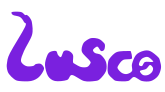
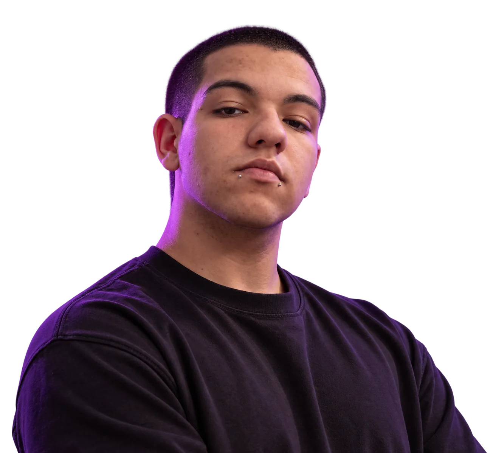
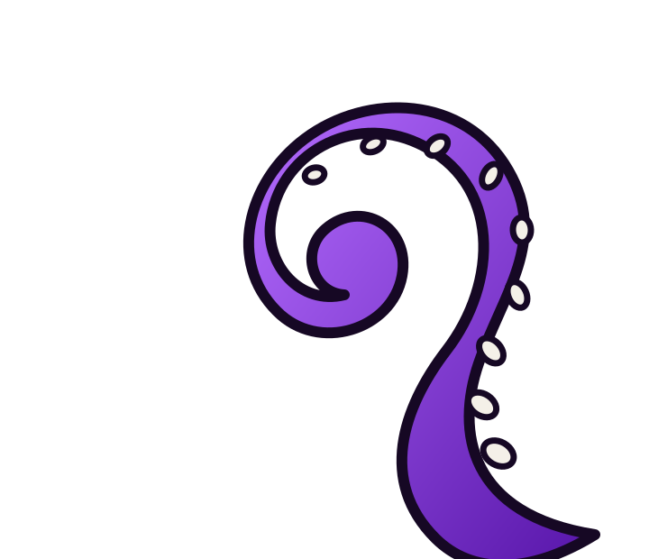
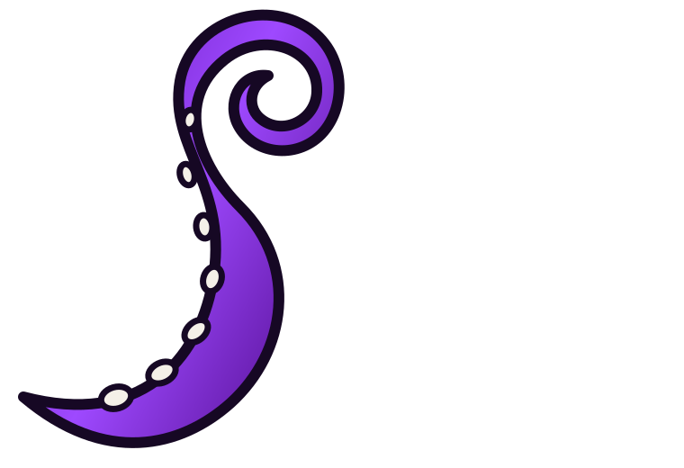
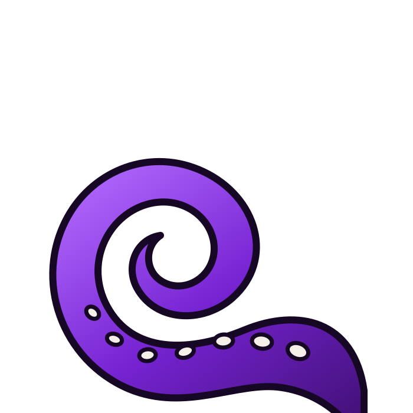
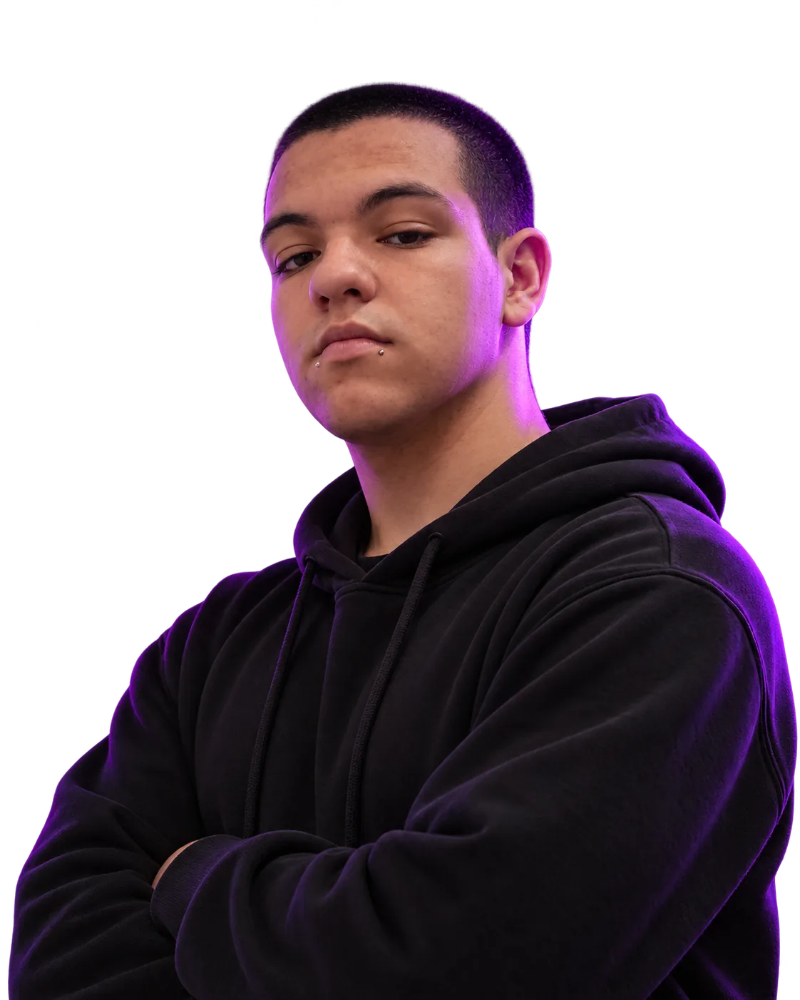

01
01
ALTO PADRÃO / ARQUITETURA / EDITORIAL
OTTOS
Aqui, o trabalho foi tirar o site do caminho para deixar arquitetura, matéria, escala e intenção falarem.
ABRIR CASE ↗
COMEÇAR UM PROJETO ↗Quando uma empresa não consegue traduzir o que ela é na tela, o problema raramente é “falta de um site”. É falta de direção. É aí que eu entro.



Antes de pensar em tecnologia, eu pensava em Arte, Composição e Intenção. Em como uma ideia muda quando ganha uma direção visual.
Design me ensinou que comunicação não é enfeite. É percepção.
Foi daí que comecei a construir identidades, páginas e experiências digitais.

Quanto mais eu construía, mais percebia que a tela era só a superfície. Por baixo dela existiam posicionamento, conteúdo, comportamento, performance, lógica e decisão.
Estudo e sigo aprofundando desenvolvimento porque quero entender o que acontece além da interface. Mas a tecnologia continua sendo o meio, e nunca o argumento principal.
“Um site só faz sentido quando ajuda alguém a perceber melhor o valor de um negócio.”
04 / POR QUE EU FAÇO ISSO
Minha função é reduzir essa distância. Entender o que existe de forte na empresa e transformar isso em uma experiência digital que tenha voz, ritmo, intenção e resultado.
Não existe template Lusco. Cada projeto abaixo exigiu uma leitura diferente.
01
ALTO PADRÃO / ARQUITETURA / EDITORIAL
Aqui, o trabalho foi tirar o site do caminho para deixar arquitetura, matéria, escala e intenção falarem.
ABRIR CASE ↗COMUNICAÇÃO / MOVIMENTO / PRESENÇA
Uma empresa que vive de movimento precisava de um site com energia, ritmo e presença.
ABRIR CASE ↗ 02
02
 03
03
DIREITO / AUTORIDADE / CONFIANÇA
O desafio era construir presença e segurança visual em um segmento em que confiança vem antes do clique.
ABRIR CASE ↗ 04
04
BELEZA / DESEJO / CONVERSÃO
Serviços diferentes organizados em uma jornada clara, estética e direta para ação.
ABRIR CASE ↗PSICOLOGIA / ACOLHIMENTO / CLAREZA
Menos ruído, mais acolhimento. Uma presença digital pensada para criar confiança antes mesmo da primeira conversa.
ABRIR CASE ↗ 05
05
MESMA INTERNET.
PROBLEMAS DIFERENTES.
SOLUÇÕES DIFERENTES.
06 / COMO EU PENSO
O que o negócio precisa mudar na percepção, na comunicação ou na conversão.
Transformar estratégia em narrativa, hierarquia, ritmo e direção visual.
Escolher e combinar tecnologias que façam sentido para aquela experiência.
Testar, cortar excessos, melhorar movimento, responsividade e performance.
07 / TECNOLOGIA
HTML. CSS. JAVASCRIPT. GSAP. FIGMA. GIT. APIs. SEO.
Não como lista de serviços. Como repertório. A ferramenta muda. O critério continua.
08 / HUMANO POR TRÁS DA INTERFACE
Sou João Lucas. Gosto de design, tecnologia e, principalmente, de entender por que alguma coisa não está funcionando como deveria.
Não quero ser uma agência genérica com dez pacotes. Quero ser o profissional que senta do outro lado da mesa, entende o contexto e constrói a resposta certa NA SUA FRENTE.

09 / PRÓXIMO MERGULHO
Se existe algo forte no seu negócio que ainda não aparece quando alguém entra no seu site, esse é um bom ponto de partida para a conversa.
VAMOS CONVERSAR ↗